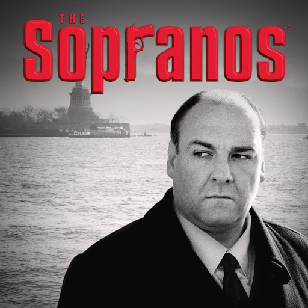

SINOPSIS DE LA SERIE
Los Soprano (en inglés, The Sopranos) es una serie de televisión estadounidense creada y producida por David Chase y HBO.
La serie se estrenó en Estados Unidos
el 10 de enero de 1999 por el canal de televisión por cable HBO, que la emitió ininterrumpidamente hasta su desenlace, el 10 de junio de 2007.
La trama de la serie gira en torno al mafioso de Nueva Jersey Tony Soprano (James Gandolfini) y las dificultades que enfrenta tanto en su hogar
como en la organización criminal que dirige, y la historia de los
personajes cercanos a Tony, especialmente su esposa Carmela (Edie Falco) y su sobrino y protegido Christopher Moltisanti (Michael Imperioli).
Destaca por su alto nivel de calidad en todos los aspectos de producción, y ha sido reconocida especialmente por su guion y por el trabajo de sus actores y actrices principales.
Se le acredita haber dado un gran nivel artístico a la televisión promedio y
allanado el camino para el éxito de muchas series de ficción que le siguieron

Temporada 1:
Cuando Tony Soprano colapsa después de sufrir un ataque de pánico, comienza una psicoterapia con la doctora Jennifer Melfi.
En el tratamiento
Tony revela detalles sobre su infancia, como la presencia de su vengativa madre —Livia— y la influencia de su padre, que era un gánster. También se explora su complicada
relación con su esposa Carmela, así como sus sentimientos con respecto a los lazos que tiene Tony con la mafia. Meadow y Anthony Jr., los hijos de Tony,
van tomando conocimiento de las cosas que hace su padre. Más tarde, se presentan acusaciones federales como resultado de que alguien de su organización habló con el FBI.
El tío de Tony, Corrado Junior Soprano, ordena el asesinato de Brendan Filone y la ejecución simulada de Christopher Moltisanti
—asociados de Tony— como represalia por los repetidos secuestros de
camiones bajo la protección de Corrado. Tony calma la situación al permitir que su tío sea nombrado jefe de la familia luego de la muerte del anterior —Jackie Aprile—,
aunque es Tony quien realmente
tiene el control del grupo. Sin embargo, Corrado descubre el artificio y ordena un atentado contra Tony;
el asesinato fracasa y Tony responde violentamente a la vez que confronta a su madre por su papel
en la conspiración contra él. Livia tiene un accidente cerebrovascular provocado psicológicamente, a la par
que Corrado es arrestado por el FBI por cargos no relacionados.
Temporada 2:
Al comienzo de la segunda temporada,Richie Aprile —hermano de Jackie— sale de prisión y demuestra ser incontrolable en el ámbito empresarial;
también comienza una relación con la hermana de Tony,Janice, que ha llegado de
Corrado está bajo arresto domiciliario mientras espera el juicio. Richie, frustrado con la autoridad de Tony sobre él, suplica a Corrado que lo mate; Corrado finge interés,
pero informa a Tony de las intenciones de Richie. Sin embargo, la situación se calma inesperadamente cuando Janice mata a Richie en una violenta discusión;
Tony y sus hombres ocultan todas las pruebas del asesinato y Janice regresa a Seattle. Tony se da cuenta de que «Big Pussy» es un informante del FBI;
junto con Silvio Dante y Paulie Gualtieri, lo matan mientras navegan en una lancha, lo envuelven con cadenas y lo tiran por la borda.

Temporada 3:
La tercera temporada ve el regreso de Ralph Cifaretto después de una larga ausencia en Florida.
Se involucra con Rosalie Aprile, viuda del exjefe Jackie Aprile. A pesar de la animosidad personal y la cautela hacia su comportamiento destructivo
(Ralph asesinó a una estríper en Bada Bing!, lo que llevó a Tony a agredirlo, violando el código de la mafia), Tony lo nombra caporegime debido a su éxito profesional.
Meadow empieza sus estudios superiores en la Universidad de Columbia, a la par que sale con Noah Tannenbaum, un chico cuya madre es afroamericana; la relación no es bien vista por Tony.
Jackie Aprile Jr. se involucra con Meadow y entra en una vida de drogas y crimen.
Tony inicialmente intenta actuar como mentor de Jackie, pero se vuelve cada vez más impaciente con su creciente mala conducta,
particularmente a medida que la relación de Jackie con Meadow se vuelve más seria. A pesar del consejo y la advertencia de Tony,
Jackie cruza una línea al organizar un intento fallido de robo en el juego de cartas de Ralph. Tony decide darle a Ralph la decisión sobre el castigo de Jackie Jr.
Finalmente, Ralph decide hacer que Jackie Jr. sea asesinado.
Livia muere de un derrame cerebral. Tony comienza una aventura con Gloria Trillo, quien también es paciente de la doctora Melfi;
su relación es breve y tumultuosa. Corrado es diagnosticado con cáncer de estómago; después de la quimioterapia, entra en remisión.
El hijo de Tony sigue metiéndose en problemas en la escuela y es expulsado, incluso a pesar de su éxito en el equipo de fútbol americano.

Temporada 4:
Cuando Tony Soprano colapsa después de sufrir un ataque de pánico, comienza una psicoterapia con la doctora Jennifer Melfi.
En el tratamiento
Tony revela detalles sobre su infancia, como la presencia de su vengativa madre —Livia— y la influencia de su padre, que era un gánster. También se explora su complicada
relación con su esposa Carmela, así como sus sentimientos con respecto a los lazos que tiene Tony con la mafia. Meadow y Anthony Jr., los hijos de Tony,
van tomando conocimiento de las cosas que hace su padre. Más tarde, se presentan acusaciones federales como resultado de que alguien de su organización habló con el FBI.
El tío de Tony, Corrado Junior Soprano, ordena el asesinato de Brendan Filone y la ejecución simulada de Christopher Moltisanti —asociados de Tony— como represalia por los repetidos secuestros de
camiones bajo la protección de Corrado. Tony calma la situación al permitir que su tío sea nombrado jefe de la familia luego de la muerte del anterior —Jackie Aprile—, aunque es Tony quien realmente
tiene el control del grupo. Sin embargo, Corrado descubre el artificio y ordena un atentado contra Tony; el asesinato fracasa y Tony responde violentamente a la vez que confronta a su madre por su papel
en la conspiración contra él. Livia tiene un accidente cerebrovascular provocado psicológicamente, a la par
que Corrado es arrestado por el FBI por cargos no relacionados.
Temporada 5:
Cuando Tony Soprano colapsa después de sufrir un ataque de pánico, comienza una psicoterapia con la doctora Jennifer Melfi.
En el tratamiento
Tony revela detalles sobre su infancia, como la presencia de su vengativa madre —Livia— y la influencia de su padre, que era un gánster. También se explora su complicada
relación con su esposa Carmela, así como sus sentimientos con respecto a los lazos que tiene Tony con la mafia. Meadow y Anthony Jr., los hijos de Tony,
van tomando conocimiento de las cosas que hace su padre. Más tarde, se presentan acusaciones federales como resultado de que alguien de su organización habló con el FBI.
El tío de Tony, Corrado Junior Soprano, ordena el asesinato de Brendan Filone y la ejecución simulada de Christopher Moltisanti —asociados de Tony— como represalia por los repetidos secuestros de
camiones bajo la protección de Corrado. Tony calma la situación al permitir que su tío sea nombrado jefe de la familia luego de la muerte del anterior —Jackie Aprile—, aunque es Tony quien realmente
tiene el control del grupo. Sin embargo, Corrado descubre el artificio y ordena un atentado contra Tony; el asesinato fracasa y Tony responde violentamente a la vez que confronta a su madre por su papel
en la conspiración contra él. Livia tiene un accidente cerebrovascular provocado psicológicamente, a la par
que Corrado es arrestado por el FBI por cargos no relacionados.
Temporada 6:
Cuando Tony Soprano colapsa después de sufrir un ataque de pánico, comienza una psicoterapia con la doctora Jennifer Melfi.
En el tratamiento
Tony revela detalles sobre su infancia, como la presencia de su vengativa madre —Livia— y la influencia de su padre, que era un gánster. También se explora su complicada
relación con su esposa Carmela, así como sus sentimientos con respecto a los lazos que tiene Tony con la mafia. Meadow y Anthony Jr., los hijos de Tony,
van tomando conocimiento de las cosas que hace su padre. Más tarde, se presentan acusaciones federales como resultado de que alguien de su organización habló con el FBI.
El tío de Tony, Corrado Junior Soprano, ordena el asesinato de Brendan Filone y la ejecución simulada de Christopher Moltisanti —asociados de Tony— como represalia por los repetidos secuestros de
camiones bajo la protección de Corrado. Tony calma la situación al permitir que su tío sea nombrado jefe de la familia luego de la muerte del anterior —Jackie Aprile—, aunque es Tony quien realmente
tiene el control del grupo. Sin embargo, Corrado descubre el artificio y ordena un atentado contra Tony; el asesinato fracasa y Tony responde violentamente a la vez que confronta a su madre por su papel
en la conspiración contra él. Livia tiene un accidente cerebrovascular provocado psicológicamente, a la par
que Corrado es arrestado por el FBI por cargos no relacionados.